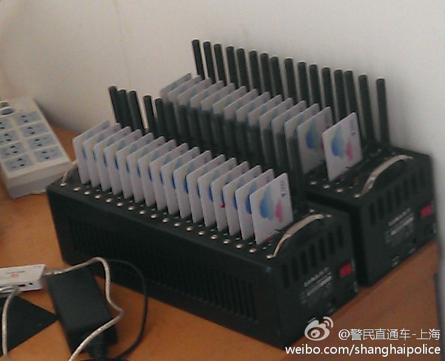

//@王集鹄:有的同学还天真想去调戏骗子给他们回短信。推荐的做法是：移动编辑 “垃圾号码*垃圾内容”到10086999进行举报 联通编辑 “ljdxjb#垃圾号码#垃圾内容”到10010进行举报。简单一条免费短信，让骗子花钱的一张卡作废@警民直通车-上海:#打防严保#@Ben君君 问：骗子每天要发那么多诈骗短信，手酸伐？答：“房东”每天要发数万条诈骗短信，但他们手应该不酸，因为他们通过“群发器”设定好手机前7位号码（确定段号是上海），后4位从0000到9999排列组合，24小时不断地发送。 